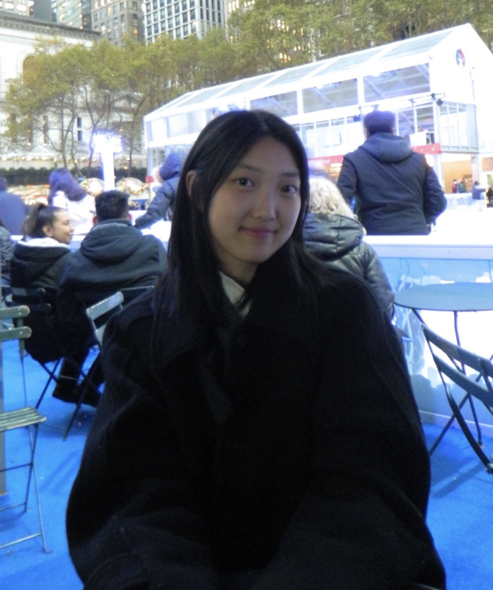

I also go by Jawon, but most people call me Jellie! I'm a motion graphic designer currently pursuing an M.F.A. in Motion Media Design at Savannah College of Art and Design. With a B.S. in Integrated Design and Media at NYU, I also offer a multitude of skills in the digital media realm, including motion graphic design, 3D animation, and brand design.
I am most passionate about bringing ideas to life by utilizing technologies and softwares to communicate stories and messages through thoughtful design. My favorite part of the creative process is the creation! I am always looking forward to turning ideas into a reality.
Resume